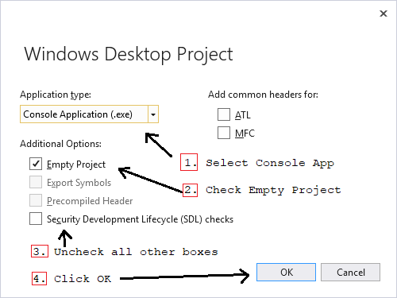

Creating a New VS2017 Project
From Windows, start up Microsoft Visual Studio
In Visual Studio - Choose File | New | Project ...
Do the following six steps in the New Project dialog:
The following four steps must be done on from Windows Desktop Project Wizard dialog:

A new project solution has now been created. You now need to Add Files and change Project Settings.